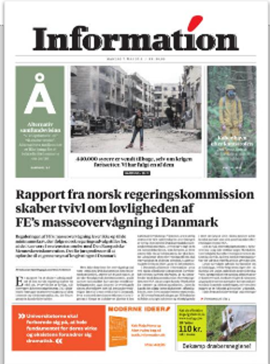

<footer class="main-footer">
    <section class="footer-section">
      <!-- First Column -->
      <div class="footer-column">
        <h2 class="footer-heading">Information som E-vis</h2>
        <ul class="footer-links">
          <li class="footer-link-item">
            <i class="fa-solid fa-desktop footer-icon"></i>
            <a href="#" class="footer-link">Læs e-avisen på din computer</a>
          </li>
          <li class="footer-link-item">
            <i class="fa-brands fa-apple footer-icon"></i>
            <a href="#" class="footer-link">Download til Apple</a>
          </li>
          <li class="footer-link-item">
            <i class="fa-brands fa-android footer-icon"></i>
            <a href="#" class="footer-link">Download til Android</a>
          </li>
        </ul>
      </div>
  
      <!-- Second Column -->
      <div class="footer-column">
        <div class="footer-image">
          
        </div>
      </div>
  
      <!-- Third Column -->
      <div class="footer-column">
        <h2 class="footer-subheading">Information hver morgen</h2>
        <input type="text" placeholder="Skriv din email her" class="footer-input">
        <button type="submit" class="footer-button">Tilmeld</button>
      </div>
  
      <!-- Fourth Column -->
      <div class="footer-column">
        <h2 class="footer-subheading">Om Information</h2>
        <p class="footer-paragraph">Redaktion</p>
        <p class="footer-paragraph">iBureauet</p>
        <p class="footer-paragraph">Besøg Butikken</p>
        <p class="footer-paragraph">Informations Venner</p>
        <p class="footer-paragraph">Ledige stillinger</p>
        <p class="footer-paragraph">Økonomi og ledelse</p>
      </div>
    </section>
  
    <!-- Address Section -->
    <section class="footer-address-row">
      <address class="footer-address">
        <p class="footer-address-text">
          Ansvarshavende chefredaktør: Rune Lykkeberg | Dagbladet Information,
          Store Kongensgade 40C, 1264 København. Telefon: 3369 6000 | CVR: 63058416
        </p>
        <p class="footer-address-text">
          Privatlivspolitik | Cookies | Annoncering
        </p>
      </address>
      <button class="footer-contact-button">Skriv til os</button>
    </section>
  </footer>
  <style>
    .main-footer {
  background-color: #f8f8f8;
  padding: 40px 20px;
  color: #333;
  border-top: 1px solid #ddd;
}

.footer-section {
  max-width: 1200px;
  margin: 0 auto;
  display: flex;
  justify-content: space-between;
  flex-wrap: wrap;
  gap: 20px;
}

.footer-column {
  flex: 1;
  min-width: 200px;
}

.footer-heading {
  font-size: 24px;
  margin-bottom: 10px;
  color: #000;
}

.footer-links {
  list-style: none;
  padding: 0;
  margin: 0;
  display: flex;
  flex-direction: column;
  gap: 10px;
}

.footer-link-item {
  display: flex;
  align-items: center;
  gap: 10px;
}

.footer-link {
  color: #333;
  text-decoration: none;
  font-size: 14px;
}

.footer-link:hover {
  text-decoration: underline;
}

.footer-icon {
  font-size: 16px;
  color: #333;
}

.footer-image {
  display: flex;
  justify-content: center;
  align-items: center;
}

.footer-photo {
  max-width: 120px;
  height: auto;
  margin-top: -20px;
}

.footer-subheading {
  font-size: 18px;
  margin-bottom: 10px;
  color: #000;
}

.footer-input {
  width: 100%;
  max-width: 300px;
  padding: 10px;
  margin-bottom: 10px;
  border: 1px solid #ddd;
  border-radius: 4px;
}

.footer-button {
  background-color: #333;
  color: #fff;
  border: none;
  padding: 10px 20px;
  cursor: pointer;
  border-radius: 4px;
}

.footer-button:hover {
  background-color: #555;
}

.footer-paragraph {
  margin: 5px 0;
  font-size: 14px;
}

.footer-address-row {
  border-top: 1px solid #ddd;
  padding-top: 20px;
  margin-top: 20px;
  display: flex;
  justify-content: space-between;
  flex-wrap: wrap;
  gap: 20px;
}

.footer-address {
  flex: 1;
  font-style: normal;
  font-size: 14px;
  line-height: 1.5;
}

.footer-contact-button {
  background-color: #333;
  color: #fff;
  border: none;
  padding: 10px 20px;
  cursor: pointer;
  border-radius: 4px;
}

.footer-contact-button:hover {
  background-color: #555;
}

  </style>
  